Copa Oro
Los puestos 1.º y 2.º de cada grupo de la fase 2 juegan semifinales: 1.º Grupo 1 vs 2.º Grupo 2 y 1.º Grupo 2 vs 2.º Grupo 1.
Inscríbete al Cuadrangular Navideño, sigue la Copa Castell y conoce los próximos torneos de Arena Castell.
COPA CASTELL · MUNDIAL DE CLUBES
Copa Oro · Copa Plata · Copa Bronce
Sábado 5 de diciembre de 2026 · Desde la 1:00 p. m.
Entrada $2 · Arena Castell, Amaguaña
Artistas invitados: Yo me llamo Aventura y más. Premiaciones oficiales, cierre con show de pirotecnia y sorpresas por Fiestas de Quito.
Ver afiche completo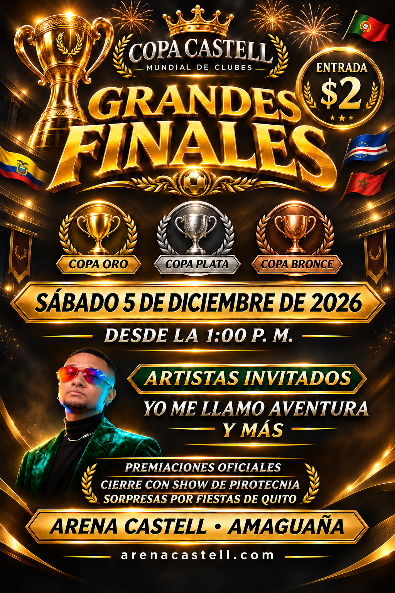
COPA CASTELL · EN JUEGO
Consulta marcadores en vivo. Las posiciones y los goleadores se actualizan al finalizar cada partido.
COPA CASTELL · EDICIÓN MUNDIALISTA
Los cruces decisivos ya están en marcha. Portugal es el primer finalista de Oro y Francia disputará el tercer puesto. El grupo Bronce terminó: Uruguay jugará la final ante Colombia, 5.º del Grupo 2.
A indica el Grupo 1 de la primera fase; B, el Grupo 2. El número es la posición en que terminó el equipo.
+2 puntos de bonificaciónA1 y B1, ganadores de sus grupos en la primera fase, empiezan esta fase con dos puntos.
Consultar las tablas oficiales de la fase 2 y Bronce →En el Grupo 1 de la fase 2 juegan cuatro equipos, todos contra todos una vez: tres partidos por equipo. En el Grupo 2 juegan cinco equipos, todos contra todos una vez: cuatro partidos por equipo. Los cruces y horarios se publicarán en el calendario.
Los puestos 1.º y 2.º de cada grupo de la fase 2 juegan semifinales: 1.º Grupo 1 vs 2.º Grupo 2 y 1.º Grupo 2 vs 2.º Grupo 1.
Los puestos 3.º y 4.º de cada grupo de la fase 2 juegan semifinales: 3.º Grupo 1 vs 4.º Grupo 2 y 3.º Grupo 2 vs 4.º Grupo 1.
En Oro y Plata, los ganadores disputan la final y los perdedores se enfrentan por el tercer puesto. Los semifinalistas se conocerán después de jugar la fase 2.
Un solo grupo: A5, A6, A7, B6, B7 y B8. Son seis equipos; todos se enfrentan una vez durante cinco fechas y se ordenan por puntos.
B5 es el equipo que termina 5.º en el Grupo 2 de la fase 2. Clasifica directamente a la final de la Copa Bronce.
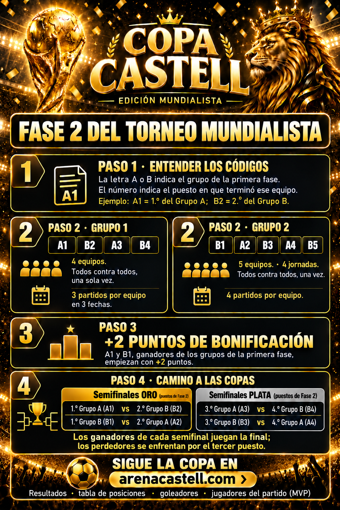
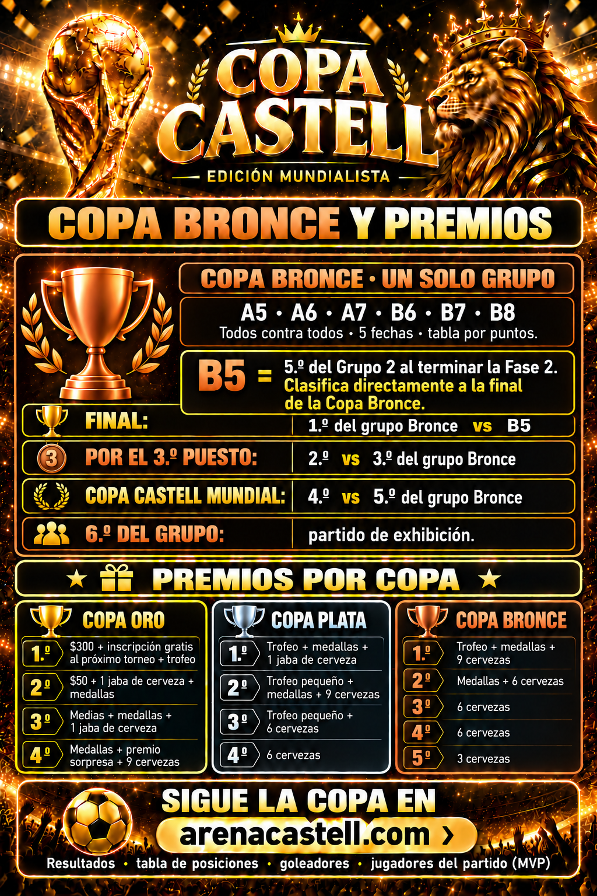
FASE DECISIVA · COPA CASTELL
La fase de grupos ya definió el camino. Consulta las finales, los partidos por el tercer puesto y la definición de Bronce. Las tablas oficiales siguen disponibles al final de esta sección.
SEMIFINALES · COPA ORO
Los cuatro mejores de la fase 2 se enfrentan por un lugar en la final de Oro.
Semifinal 1 Viernes 20 · 7:30 p. m. 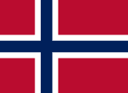 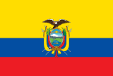
Semifinal 2 Jueves 19 · 8:30 p. m. 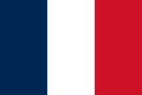 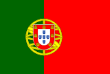
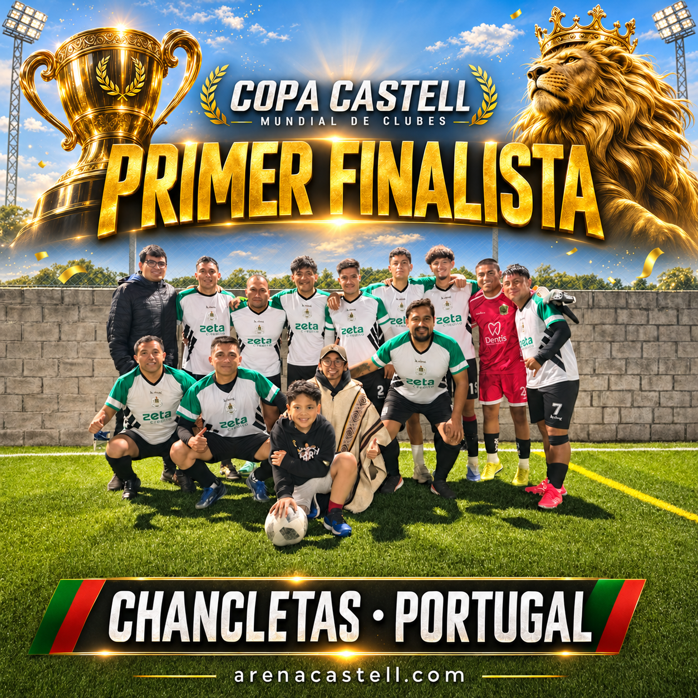
SEMIFINALES · COPA PLATA
Las llaves ya están listas. Cada partido define a un finalista de la Copa Plata.
Semifinal 1 Viernes 20 · 9:30 p. m. 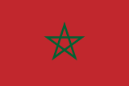 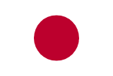
Semifinal 2 Viernes 20 · 8:30 p. m. 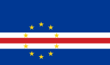 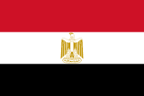
CRUCES DEFINIDOS · COPA BRONCE
Uruguay ganó el grupo Bronce y enfrentará a Colombia, 5.º del Grupo 2, por el título. Los demás puestos también tienen su cruce definido.
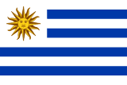
UruguayPapas Chacas · 1.º BronceVS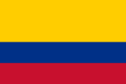
ColombiaFruta Si · 5.º Grupo 2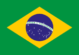
BrasilLa Última y nos vamos · 3.º Bronce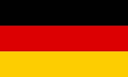
AlemaniaLos de Siempre · 4.º BronceVS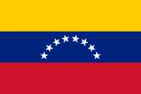
VenezuelaChocolatosos · 5.º BronceArgentina · Asadero BJ terminó 6.º y disputará el partido de exhibición indicado en el formato.
Pts: puntos · PJ: partidos jugados · GF: goles a favor · GC: goles en contra · DG: diferencia de goles.
Clasificación de la primera fase hasta la fecha 7.
Los 20 máximos goleadores del torneo, con los goles acumulados hasta los partidos finalizados del sábado 3 de octubre de 2026.
| Posición | Jugador | Selección / equipo | Dorsal | Goles |
|---|
COPA CASTELL · EDICIÓN MUNDIALISTA
Consulta los encuentros programados y los marcadores en juego. Horarios de Ecuador.
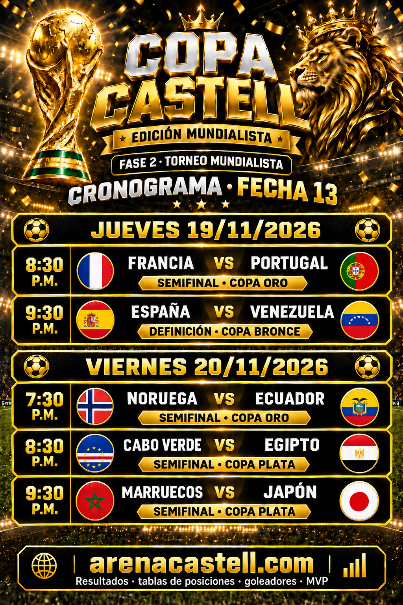
LOS DESTACADOS DE LA JORNADA
Los destacados de la jornada. Toca una foto para verla completa.
Abre una selección para ver su plantilla. Los dorsales no confirmados se dejan en blanco.
15 selecciones disponibles
Cada equipo representa a una selección. La Copa comenzó el 28 de agosto de 2026 y sus inscripciones están cerradas.
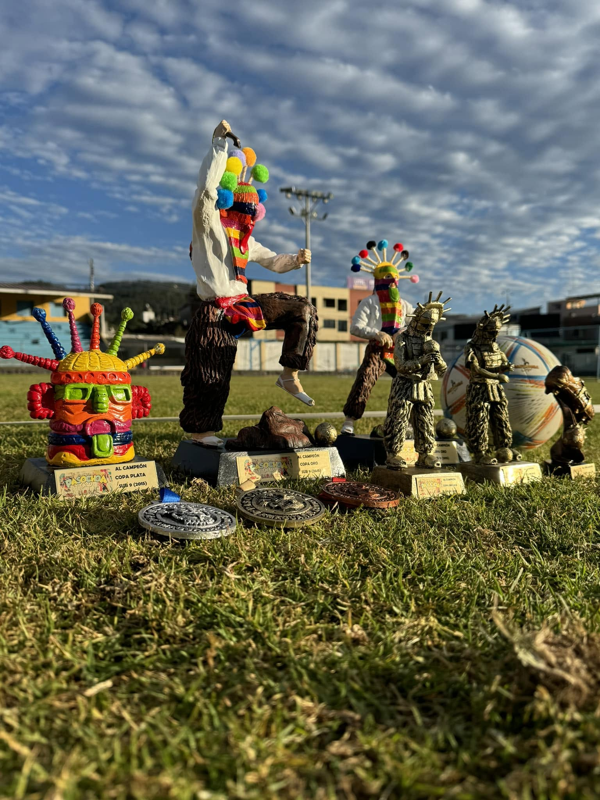
ASÍ VIVIMOS LA EDICIÓN ANTERIOR
Una edición que reunió a niños, familias y equipos alrededor del fútbol. En la premiación final, 800 niños recibieron su reconocimiento.
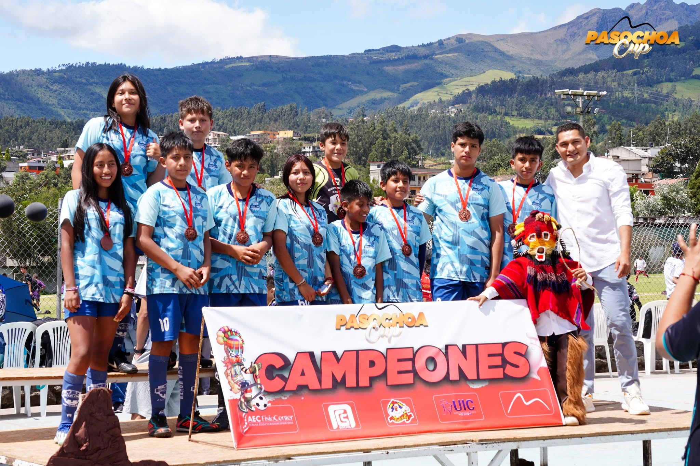
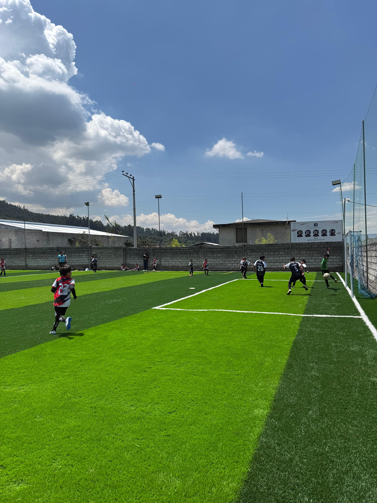
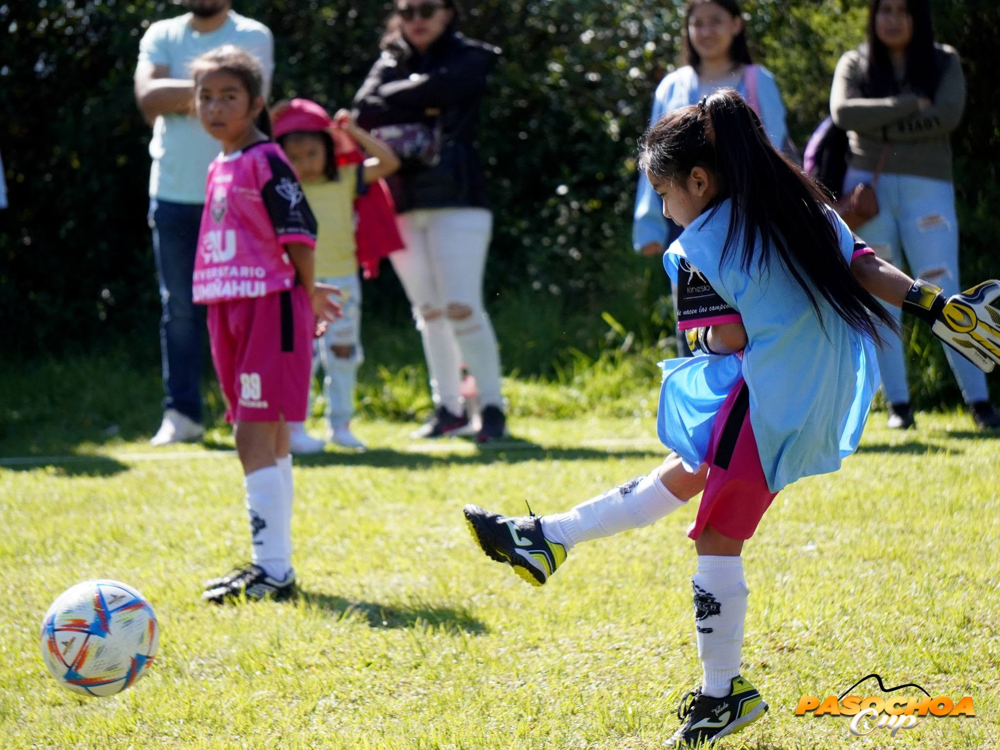
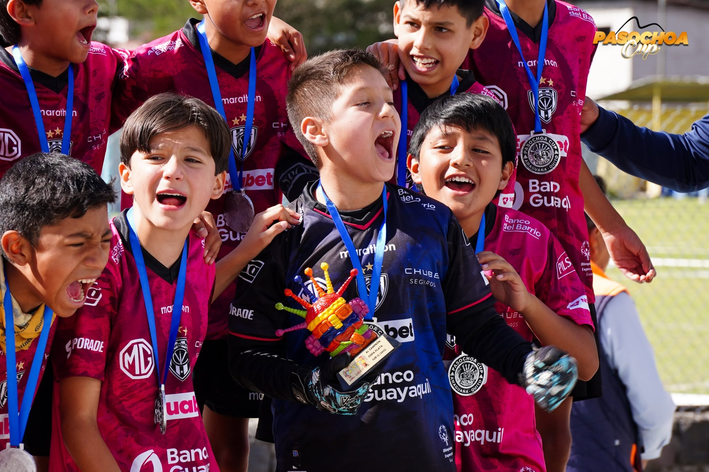
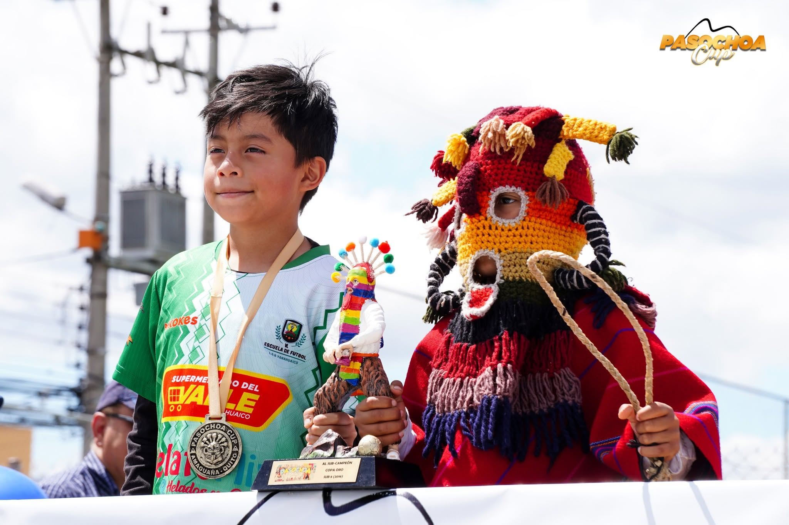